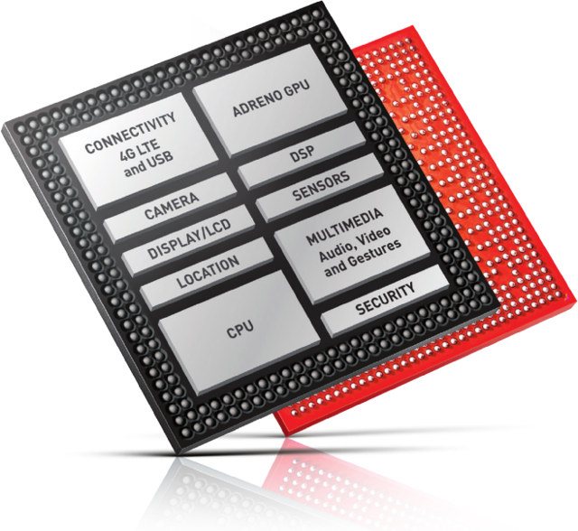
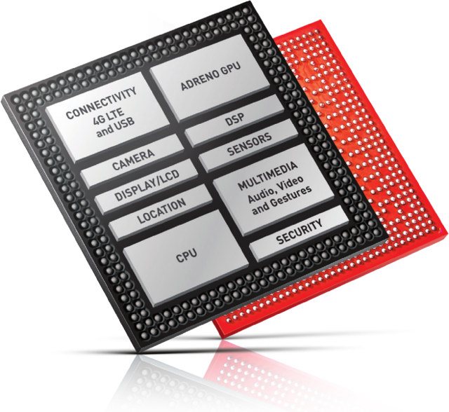

What is the main difference between RISC-V and ARM architectures? RISC-V is an open-source instruction set architecture (ISA) based on reduced instruction set computing (RISC) principles, while ARM is a proprietary ISA that has become the dominant choice for embedded systems and mobile devices.
RISC-V (pronounced "risk-five") is an open standard instruction set architecture (ISA) based on established reduced instruction set computer (RISC) principles. Unlike most other ISA designs, RISC-V is provided under royalty-free open-source licenses. A number of companies are offering or have announced RISC-V hardware; open source operating systems with RISC-V support are available, and the instruction set is supported in several popular software toolchains. As a RISC architecture, the RISC-V ISA is a load–store architecture. Its floating-point instructions use IEEE 754 floating-point. Notable features of the RISC-V ISA include: instruction bit field locations chosen to simplify the use of multiplexers in a CPU, a design that is architecturally neutral, and a fixed location for the sign bit of immediate values to speed up sign extension.
What is ARM
ARM (stylised in lowercase as arm, formerly an acronym for Advanced RISC Machines and originally Acorn RISC Machine) is a family of RISC instruction set architectures (ISAs) for computer processors. Arm Ltd. develops the ISAs and licenses them to other companies, who build the physical devices that use the instruction set. It also designs and licenses cores that implement these ISAs.
Due to their low costs, power consumption, and heat generation, ARM processors are useful for light, portable, battery-powered devices, including smartphones, laptops, and tablet computers, as well as embedded systems. However, ARM processors are also used for desktops and servers, including the world's fastest supercomputer (Fugaku) from 2020 to 2022. With over 230 billion ARM chips produced, as of 2022, ARM is the most widely used family of instruction set architectures.
 
